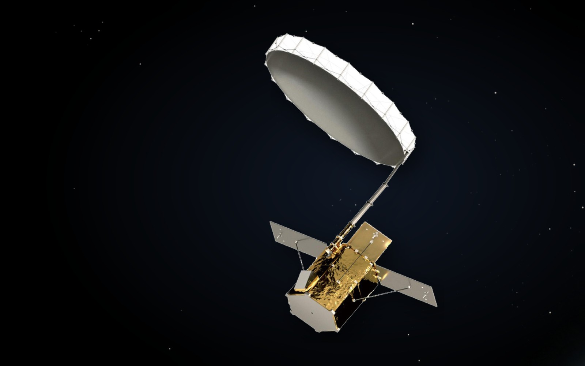

연구 과제
수자원위성 SAR 광역 ScanSAR 알고리즘 연구

주요 내용·성과
- ScanSAR 스캘로핑 보정(descalloping): 균질한 기준 영역에서는 스캘로핑 주기·변조 성분 추정이 안정적으로 이루어져 효과적으로 보정되나, 비균질 영역에서는 지형 간섭으로 추정 오차가 발생함을 분석 (김평주·정지환·민규보·이우경, 한국전자파학회논문지 37(4):342–347, 2026.04.30, DOI 10.5515/KJKIEES.2026.37.4.342)
- 논문 사사에 K-water '수자원위성 지상운용체계 구축' 사업(RS-2025-11-0400) 지원 명시 — 행정안전부 '급경사지 안전관리를 위한 드론 기반 SAR 모니터링 시스템 개발'(RS-2025-02633421)과 공동 사사
- 수자원위성 배경(K-water·언론): C-밴드 SAR로 홍수·가뭄, 토양수분 변화, 수리시설 변위, 하천·저수지 부유물 등을 면 단위로 관측; 세종시 국가 수자원위성센터 조성